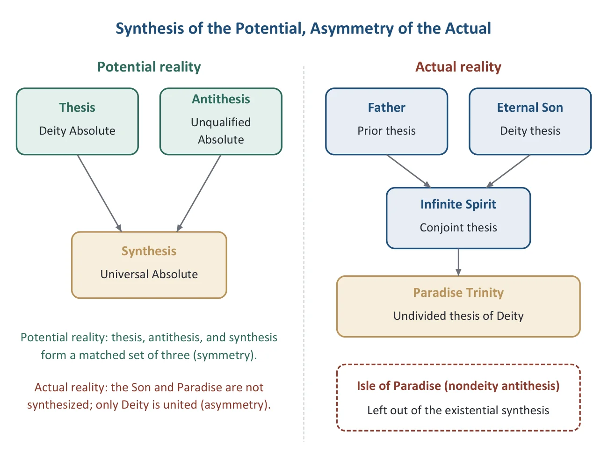

La Edad Cero
Original: Prólogo en la eternidad · Segundo prólogo: la Edad Cero (pp. 6–13)
EN ESTE CAPÍTULO
Antes de Havona no hay realidad en el sentido de hecho, pero aun así se pueden formar conceptos válidos sobre esa condición. Comparándola con el número cero, Sadler sitúa una «Edad Cero» antes de la Primera Edad del Universo y usa diagramas para seguir cómo la Deidad avanza allí a través de los niveles estático, potencial y asociativo. En el camino aparecen los tres Absolutos, Dios se convierte en Padre y se completa una tesis, antítesis y síntesis de la realidad potencial. En la realidad actual, sin embargo, la síntesis esperada cede el paso a algo que nadie habría podido predecir.
1. Seis edades del universo y lo que vino antes (orig., p. 6)
Para estudiar bien el universo maestro conviene remontarse tan atrás como se pueda, porque los preparativos para él se hicieron en el Paraíso. Sadler ordena el desarrollo del universo maestro en seis grandes divisiones de tiempo, las seis edades del universo. Vivimos en la segunda de ellas. La primera pertenece a Havona, el universo central. Esa creación divina es el núcleo eterno de perfección, y el resto del universo maestro gira lentamente a su alrededor mientras se extiende poco a poco hacia la inmensidad del espacio exterior.
Éste es el núcleo eterno de perfección, en torno al cual gira esa procesión infinita de universos que constituyen el formidable experimento evolutivo, la audaz aventura…14:0.2
2. Hechos y conceptos válidos (orig., p. 6)
La analogía del cero
La eternidad «amanece» con el Havona eterno ya presente. Antes del «tiempo» de Havona, por lo tanto, no puede haber realidad como hecho. Aun así, Sadler sostiene que podemos tener conceptos válidos sobre lo que hay antes de él. Un concepto no necesita ser un hecho para ser útil y sólido. Cuando hablamos en lenguaje espacio-temporal de realidades que preceden al tiempo y al espacio, no podemos asir hechos actuales, pero sí podemos acercarnos a conceptos relativamente válidos.
Sadler ilustra la distinción con los números. Al contar, «uno» es el primer número real, pero detrás de él está el concepto «cero». El cero no es algo que exista como hecho, pero es claramente un concepto válido, y sin él las matemáticas no funcionarían como es debido. Del mismo modo, si la Primera Edad del Universo es la primera «edad de hecho», detrás de ella está el concepto de una edad anterior a Havona. Sadler la llama la Edad Cero. La marca del cero en una regla no mide nada por sí misma, pero muestra dónde comienza la primera pulgada.
El libro de Urantia no usa la expresión «Edad Cero». Sin embargo, sí postula un estado anterior a la aparición del Espíritu Infinito y del universo central y explica los orígenes de la realidad paso a paso, y el propio texto afirma que este es un modo de explicación adaptado a las mentes finitas.
Por lo tanto, debemos presentar muchos eventos simultáneos de la eternidad como transacciones secuenciales.0:3.20
3. Relaciones de origen en la eternidad (orig., p. 7)
Todo intento de pensar en los «orígenes» en el pasado eterno tropieza pronto con dificultades. Dios es el Padre del Hijo Eterno, y sin embargo el Hijo es tan «antiguo» como Dios. Sadler propone que dejemos de lado por un momento la palabra «eterno» y pensemos en el lenguaje más cómodo del tiempo. Vistas así, las realidades eternas (el Padre, el Hijo y el Espíritu, junto con la Isla del Paraíso y el universo central) se agrupan en tres relaciones de origen.
| Etapa | Realidades | Razón para situarlas aquí |
|---|---|---|
| Eterno | Espíritu Infinito; Havona, el universo central | Eternos, pero aparecen cuando el Hijo y el Paraíso ya estaban presentes |
| Más eterno | Hijo Eterno; Isla del Paraíso | Ya estaban presentes cuando aparecieron el Espíritu y Havona |
| El más eterno | Padre Universal | Padre del Hijo y fuente del Paraíso |
Sadler acuña deliberadamente la torpe expresión «más eterno» (eternaler) para mostrar que incluso dentro de la eternidad pueden concebirse tres etapas. Propone ir tan hacia dentro como alcancen los conceptos y luego salir una etapa cada vez, hacia Havona y la realidad de hecho. El libro de Urantia deja claro que tales secuencias no son más que una concesión a las mentes atadas al tiempo.
…en otras palabras, que no hubo nunca un momento en que el YO SOY no fuera el Padre del Hijo y, con él, del Espíritu.0:3.23
4. Exploración del pasado eterno (1): la Deidad estática (orig., pp. 7–8)
Dios antes de la paternidad
Si viajamos hacia atrás tanto como lo permite el pensamiento, nos encontramos intentando imaginar a Dios tal como era antes de convertirse en el Padre del Hijo Eterno. Sadler llama a esto el concepto de un Dios «prepadre». Es un concepto válido más que un hecho. ¿Cómo habría sido cuando Dios estaba solo, antes de haber hecho ningún plan para crear?
En el corazón de la Edad Cero está la quietud. Hay estabilidad absoluta y nada se mueve. Dios es autosuficiente, vive dentro de sí mismo y lo contiene todo dentro de sí. En la imagen de Sadler todo es interior y nada exterior; no hay nada más allá; solo hay un ahora eterno, sin pasado detrás ni futuro delante. Dios simplemente es. El libro de Urantia enumera esto como el primer nivel de la Deidad.
1. Estático — Deidad autocontenida y autoexistente.0:1.4
Todavía verdadero hoy
Sadler hace aquí una observación importante. La Deidad estática no es una condición teórica que existió hace mucho tiempo y luego pasó. Es tan verdadera hoy como lo era en las profundidades del pasado eterno, y seguirá siéndolo a lo largo de todo el futuro eterno. Dios es estático y, al mismo tiempo, también todo lo demás. No necesita pasar de una actividad a la siguiente; lo hace todo a la vez y siempre. Esta es la clave de todo el capítulo. La Deidad estática, la potencial y la asociativa se presentan una tras otra, pero el orden es conceptual, no cronológico.
5. Exploración del pasado eterno (2): la Deidad potencial (orig., pp. 8–10)
Dios hace un plan
Desde las profundidades de la Edad Cero damos un primer paso hacia la realidad de hecho. Ahora consideramos a Dios después de haber formado un plan. Todavía no ha hecho nada, pero ha querido hacer algo. Ese «algo» se convierte en posibilidad, es decir, en potencial. Porque Dios decidió expresar su voluntad, la Deidad se convirtió en Deidad autovolitiva. Los potenciales llegaron a existir, y la Deidad se convirtió en Deidad potencial.
2. Potencial — Deidad autovolitiva y con autopropósito.0:1.5
Un círculo se divide en dos
Sadler muestra esta etapa con un diagrama. Imaginemos un círculo, marcado en su centro con un punto, que representa la Deidad estática. Ahora estrechemos el círculo por la cintura hasta darle forma de reloj de arena, de modo que el punto quede en medio de uno de los lazos. Separemos por completo los dos lazos, y habrá dos círculos: uno con el punto y otro sin él.
El círculo con el punto es la Deidad. Se separó del otro círculo porque Dios decidió que así fuera. El punto representa la voluntad de Dios. El otro círculo no se movió en absoluto; es la no deidad. Al carecer de voluntad, puede responder pero no puede iniciar.

El Absoluto Cualificado y el No Cualificado
Al retirarse Dios del círculo de la no deidad, el círculo que se movió con él quedó cambiado. Sadler usa aquí la palabra «cualificado» en el sentido de «limitado o modificado de algún modo». Lo que Dios hizo con el círculo del punto fue limitarlo y modificarlo de alguna manera. El círculo que quedó atrás estaba, por tanto, sin cambiar, sin mover y sin cualificar. Como todo esto ocurre en el nivel absoluto, Sadler llama al círculo que quedó atrás el Absoluto No Cualificado y llama al círculo que se separó el Absoluto Cualificado, que más tarde se conocerá como el Absoluto de Deidad.
Sadler nos invita a pensar en los dos Absolutos como depósitos ilimitados. Contienen todos los planes de Dios para el futuro, y cuando Dios hace actuales esos planes, se sirve de ellos. Los planes para las cosas, para la materia física y para la materialización impersonal los toma del Absoluto No Cualificado; los planes para el espíritu y para los seres personales, del Absoluto de Deidad. El libro de Urantia trata igualmente estos dos Absolutos como los dos extremos de la realidad deificada y no deificada.
6. El Absoluto No Cualificado. Estático, reactivo y expectante; la infinidad cósmica no revelada del YO SOY; la totalidad de la realidad no deificada y la finalidad de todo potencial no personal.105:3.7
Sadler y el texto: ¿un Absoluto «cualificado» o uno que «cualifica»?
Sadler imagina el Absoluto de Deidad como un Absoluto «cualificado», movido por Dios. El libro de Urantia, en cambio, describe el Absoluto de Deidad más bien como el que cualifica. Llama al Absoluto de Deidad «el cualificador de lo absoluto y el absolutizador de lo cualificado» [105:3.6]. Los dos planteamientos no están realmente en conflicto. El Absoluto de Deidad es el dominio que la voluntad de Dios ha tocado y delimitado, y precisamente por eso se convierte en el poder que cualifica con propósito la realidad no deidad. La etiqueta de Sadler es una comodidad al servicio de su diagrama; el nombre formal en el texto es el Absoluto de Deidad.
6. Exploración del pasado eterno (3): la Deidad asociativa (orig., pp. 10–11)
Una cadena de tres eslabones
Avanzamos un paso más, hacia el límite lejano de la Edad Cero. El primer acto asociativo que Sadler considera es la asociación de los dos Absolutos. Como ambos procedieron de la misma realidad estática original, siguen conectados, y su relación es del todo real. Cuando uno se convierte en dos, hay «uno y otro». La palabra «y» es en sí misma una realidad. Como esta conexión es universal, se llama el Absoluto Universal. Como el eslabón central de una cadena de tres eslabones, el Absoluto Universal une a los otros dos. Dibujemos tres anillos en fila, con el anillo central entrando ligeramente en cada uno de los anillos vecinos, y la imagen estará completa.
3. Asociativo — Deidad autopersonalizada y divinamente fraternal.0:1.6
El libro de Urantia enseña que el Absoluto Universal resuelve la tensión producida cuando la Deidad se separó de la infinidad no cualificada.
Esta tensión de diferencial en infinidad se resuelve en el Absoluto Universal, que funciona para unificar y coordinar la infinidad dinámica de la Deidad Total y la infinidad estática del Absoluto No Cualificado.0:3.21
De prepadre a Padre
Otra relación asociativa en la eternidad es aquella en la que entra el propio Dios, la relación que lo convierte en el Padre Universal. Hasta ahora hemos pensado en Dios como prepadre. Visto así, Dios es la personalidad absoluta, y como tal está confinado por todas las limitaciones que derivan de ser absoluto. Como llena por completo toda la Deidad, el Absoluto de Deidad, no hay Deidad fuera de él ni «espacio» en el que moverse.
Así que Dios hace espacio. Del mismo modo que antes se separó de la realidad total al separar el Absoluto Cualificado del Absoluto No Cualificado, ahora se separa de la personalidad absoluta. Sadler resume tres consecuencias. Primera: al dar a la personalidad absoluta una existencia aparte de la suya, Dios se convierte en la causa y la fuente de esa existencia. Segunda: si es la fuente de una persona, es el padre de esa persona; y quien puede ser padre de la persona absoluta puede ser padre de toda persona, y así convertirse en el Padre Universal. Tercera: la personalidad absoluta se convierte en el Hijo original de Dios. Como todo esto sucede en la eternidad, lo llamamos el Hijo Eterno.
Mediante la técnica de la trinidización el Padre se despoja de esa personalidad espiritual no cualificada que es el Hijo, pero al hacerlo, se constituye en el Padre de este mismo Hijo…10:2.1
Este es el comienzo de la fraternidad divina de las personas eternas de la Deidad, una comunión que se completa cuando surge el Espíritu Infinito, la tercera persona.
7. Tesis, antítesis y síntesis existenciales (orig., pp. 11–13)
Cuatro palabras
Sadler comienza definiendo cuatro palabras poco familiares del título de esta sección. Existencial es un término con un significado especial en El libro de Urantia: se refiere a lo que es eterno, sin principio ni fin. Lo existencial nunca ha dejado de existir y posee un conocimiento completo previo a toda experiencia. Dios es existencial. Su opuesto es experiencial, que describe a los seres y las cosas que tienen un origen, junto con todo lo que es capaz de crecer mediante la experiencia. Los seres humanos son totalmente experienciales en su crecimiento.
Las otras tres palabras, tesis, antítesis y síntesis, están tomadas del filósofo Hegel. Una tesis es una presentación; una antítesis difiere de ella, contrasta con ella y la estimula. Sadler subraya que una antítesis no tiene por qué ser hostil a la tesis. Una síntesis reúne a las dos en un todo armonioso en el que cada una se engrandece. Este patrón de tres pasos se repite muchas veces en el estudio del universo maestro.
Tesis, antítesis y síntesis en la realidad potencial
Ya hemos visto desarrollarse este proceso. Cuando Dios sacó el Absoluto Cualificado de la infinidad total, ese movimiento fue la primera expresión de su voluntad de actuar, la primera tesis. Lo que quedó atrás, ni movido ni cualificado, se convirtió en la antítesis de lo que Dios había querido. El Absoluto de Deidad es la primera tesis potencial; el Absoluto No Cualificado es la primera antítesis potencial. Cuando el Absoluto Universal une a los dos, se logra la primera síntesis.
Tesis y antítesis en la realidad actual
Volvamos al «momento» en que Dios se separa de la personalidad absoluta y se convierte en su Padre. Sadler sostiene que en ese mismo momento Dios estableció también el mecanismo absoluto, la Isla del Paraíso, por razones no muy distintas de las nuestras para construir máquinas: llevar a cabo un trabajo relativamente mecánico y repetitivo. El Paraíso sirve como centro y controlador físico de los universos materiales, mientras que el Hijo Eterno sirve como centro y controlador espiritual de la creación del espíritu. Personal y espiritual, el Hijo es la tesis de la Deidad actual; el Paraíso, que no es ni lo uno ni lo otro, se le opone como una antítesis que es actual pero no es Deidad.
Cuando la realidad se diferencia entre lo personal y lo no personal (el Hijo Eterno y el Paraíso), no es apropiado llamar «Deidad» a aquello que es no personal, a menos que esté cualificado de alguna manera.11:9.4
La situación es muy paralela a la de los Absolutos. La única diferencia es que los Absolutos son potenciales, mientras que el Hijo y el Paraíso son actuales. Sería razonable, pues, esperar que Dios sintetizara al Hijo y el Paraíso del mismo modo que sintetizó los dos Absolutos en el Absoluto Universal. Pero Dios no es una máquina. Sucedió algo inesperado.
Una tesis sobre una tesis
No se produce ninguna síntesis del Hijo con el Paraíso, de la actualidad espiritual con la actualidad no espiritual. En su lugar, comenzando por sí mismo y por el Hijo, Dios une toda la realidad actual de Deidad. El Padre y el Hijo, unidos como el Padre-Hijo, dan origen a un tercer ser que expresa no a uno o al otro, sino a ambos, eterna y perfectamente. Así surge el Espíritu Infinito, el Dios de Acción.
Este mismo Actor Conjunto, este Dios de Acción es la expresión perfecta de los planes y propósitos sin límites del Padre-Hijo mientras que funciona por sí mismo como fuente de la mente y donador del intelecto para las criaturas de un vasto cosmos.105:3.5
Sadler describe esto como una tesis colocada sobre una tesis. Si el Hijo es la tesis de la Deidad actual, el Padre ocupa el lugar de la «tesis previa» de la Deidad, mientras que el Espíritu surge como la «tesis conjunta» de la Deidad actual. Unidos como la Trinidad, los tres expresan juntos una sola tesis indivisa de la Deidad que es a la vez existencial y actual.

La asimetría de un artista
Si Dios hubiera sintetizado al Hijo, que es espíritu, con el Paraíso, que no lo es, el resultado habría sido una imagen equilibrada. Los actuales (Hijo Eterno, Paraíso, Espíritu Infinito) habrían formado un conjunto simétrico de tres, igual que los potenciales (Absoluto No Cualificado, Absoluto Universal, Absoluto de Deidad). Pero nadie habría podido prever que Dios se uniría al Hijo tanto en el Espíritu como en la Trinidad.
Sadler llama a este resultado una «asimetría artística». Pensemos en la diferencia entre una marca colocada exactamente en el centro de un rectángulo y otra colocada un poco a un lado. Una disposición ligeramente desequilibrada parece más viva que la simetría matemática y mecánica. Dios es un artista antes que un ingeniero.
Cuando Dios unifica parte de la realidad actual, solo la Deidad entra en la unión; el Paraíso queda fuera. Sadler advierte que este punto llegará a ser muy importante más adelante. El Paraíso, omitido de la síntesis existencial, sigue siendo una tarea para todos los asociados y subordinados experienciales de Dios que aparecen después. Esa tarea lleva a la pregunta de por qué tiene lugar, en definitiva, la síntesis poder-personalidad. Hemos llegado ahora al «amanecer» de la eternidad, donde termina la Edad Cero.
Puntos clave
- Antes de Havona no hay realidad como hecho, pero aun así pueden formarse conceptos válidos; por analogía con el número cero, Sadler llama a esto la Edad Cero.
- Reformuladas en lenguaje temporal, las relaciones de origen en la eternidad forman tres etapas, eterno, más eterno y el más eterno; se trata de un orden de conceptos, no de tiempo.
- La Deidad estática es el Dios autosuficiente, y sigue siendo verdadera hoy.
- En la Deidad potencial el círculo se divide en el Absoluto de Deidad y el Absoluto No Cualificado; en la Deidad asociativa el Absoluto Universal une a los dos.
- Al separarse de la personalidad absoluta, Dios se convierte en el Padre del Hijo Eterno y, por tanto, en el Padre Universal.
- En la realidad potencial se completan la tesis, la antítesis y la síntesis; en la realidad actual el Hijo y el Paraíso no se sintetizan, y en su lugar el Padre y el Hijo se unen en el Espíritu Infinito.
- El Paraíso, dejado fuera de la síntesis existencial, se convierte en una tarea posterior para los seres experienciales: el problema de la síntesis poder-personalidad.